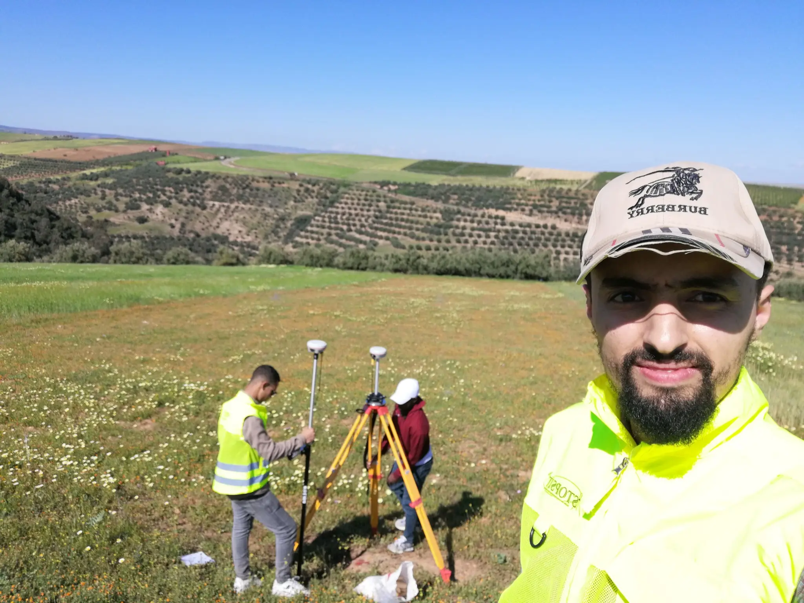

Dossiers Techniques Cadastrales
Constitution complète de dossiers pour l'ANCFCC incluant levés, plans et documents administratifs. Service principal pour toute immatriculation foncière au Maroc.
Plus de 2 900 projets cadastraux réalisés au Maroc. Levés topographiques, bornage, lotissements et SIG avec une précision centimétrique.
Nous servons aussi bien les institutions que les particuliers à Kenitra et dans tout le Maroc
Solutions complètes pour tous vos projets fonciers, cadastraux et d'aménagement au Maroc
Constitution complète de dossiers pour l'ANCFCC incluant levés, plans et documents administratifs. Service principal pour toute immatriculation foncière au Maroc.
Cartographie détaillée des élévations pour planification de construction et aménagement du territoire. Précision centimétrique avec équipements GNSS.
Détermination précise des limites de votre terrain pour documentation légale et résolution de litiges fonciers.
Placement précis des éléments de construction selon les plans d'ingénierie pour garantir la conformité de votre projet.
Expertise en division et gestion technique des biens en copropriété — plans, états descriptifs, règlements.
Mise en concordance des immeubles avec les registres fonciers. Procédure obligatoire lors de modifications de bâtiments.
Subdivision de terrains pour projets de développement résidentiel ou commercial, de A à Z avec ANCFCC.
Procédures complètes d'immatriculation pour grands ensembles fonciers institutionnels ou privés.
Plans détaillés avec dimensions précises pour vos projets de construction ou permis de construire.
Localisation précise de votre propriété dans son environnement — requis pour tout dossier administratif.
Relevés standards internationaux pour clients étrangers ou projets à financement international.
Analyse géospatiale avancée et systèmes d'information géographique pour collectivités et institutions.
Fondée en 2005, STOPSIT est une société professionnelle de topographie basée à Kenitra. Avec plus de 2 900 levés cadastraux réalisés, nous sommes devenus un partenaire de confiance pour l'ANCFCC (Agence Nationale de la Conservation Foncière, du Cadastre et de la Cartographie) et l'Agence Nationale des Eaux et Forêts.
Notre équipe d'ingénieurs géomètres topographes et de techniciens spécialisés combine les principes traditionnels de topographie avec une technologie de pointe pour fournir des résultats précis et fiables. Nous intervenons à Kenitra, Sidi Slimane, Fquih Ben Saleh, Khenifra, El Hajeb, Azilal, Chefchaouen et dans tout le Maroc.

Projets majeurs réalisés pour des institutions nationales — ANCFCC, Agence des Eaux et Forêts
Partenaire principal depuis 2006
Projets environnementaux
5 959 hectares — Canton forestier de Taïnza et BabBerred — Projet en cours
4 346 hectares immatriculés — Commune Rurale de TAMCHACHAT (3 192 Ha) et SEBT JAHJOUH (1 154 Ha)
3 667 hectares — Forêt domaniale d'Azrou N'Ait Lahcen à El Kbab
Travaux de bornage et dossiers techniques cadastraux — Lotissement Jnane TR 2, Kenitra
14 500 hectares — Dossiers cadastraux des cantons de Ighir N'Tmich, Jbel Iskt et Sidi Meskour
404 affaires cadastrales traitées sur 4 années
2 025 affaires cadastrales traitées — Notre plus grand projet à ce jour
197 affaires cadastrales traitées
335 affaires cadastrales traitées — Premier contrat ANCFCC
Matériel de pointe pour une précision centimétrique sur chaque projet
Récepteurs de positionnement par satellite (Kolida, Trimble, CHC HUACE) pour une précision centimétrique
2 stations totales SOKKIA pour mesures topographiques de haute précision
AutoCAD et Geomedia COVADIS pour conception assistée par ordinateur et rendu professionnel
Trimble Business Center (TBC) pour post-traitement professionnel des données satellitaires
3 véhicules professionnels 4×4 pour interventions sur tout type de terrain au Maroc
13 ordinateurs, traceurs format A0, scanners et imprimantes professionnelles
Avis vérifiés de clients à Kenitra et au Maroc
"La société STOPSIT se distingue comme l'une des meilleures entreprises dans le domaine de la topographie. Grâce à la gestion rigoureuse et à la vision stratégique de Monsieur Fayçal Barrouch, elle offre des prestations de grande qualité..."
"STOPSIT se distingue par son sérieux, son professionnalisme et la qualité de son travail. Une équipe compétente, réactive et toujours à l'écoute..."
"J'ai eu une excellente expérience avec M. Fayçal Barrouch Topographe SIG chez STOPSIT. Professionnalisme, précision et réactivité..."
"Un espace organisé et fonctionnel, équipé d'outils modernes de mesure et de cartographie..."
"Service professionnel, précis et d'une grande qualité..."
"مكتب دراسات طبوغرافية جدير بالثقة ويقدم خدمات احترافية"
Tout ce que vous devez savoir avant de contacter un ingénieur topographe à Kenitra
Un levé topographique est une mesure précise du terrain : relief, courbes de niveau, limites, bâtiments existants, végétation et réseaux. Il est indispensable avant toute construction, division de terrain ou immatriculation foncière. Chez STOPSIT, nous réalisons des levés avec une précision centimétrique grâce à nos équipements et technologies de pointe.
Le coût dépend de la superficie du terrain, de sa localisation (accès, relief) et de la complexité administrative. STOPSIT propose des devis gratuits et personnalisés dans les 24 heures. Appelez le +212 661-688603 ou écrivez-nous à stopsit.sarl@gmail.com.
STOPSIT est basé à Kenitra mais intervient dans tout le Maroc : Sidi Slimane, Fquih Ben Saleh, Khenifra, El Hajeb, Azilal, Chefchaouen, Rabat et au-delà.
Les délais d'une prestation topographique au Maroc dépendent du type de prestation et de la complexité du travail. STOPSIT prépare des dossiers complets et conformes pour minimiser les délais de traitement administratif.
Devis gratuit sous 24 h. Notre équipe est disponible du lundi au samedi.
Lundi – Vendredi : 9h00 – 18h00
Samedi : 9h00 – 13h00